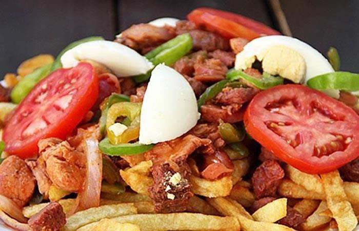

SOPA MANI
Sopa de Maní La sopa de maní es una de las más deliciosas y tradicionales de Bolivia. Lleva como base maní, verduras,
macarrones y papas. Usualmente va acompañada de trozos de carne de costilla de res o pollo.

PIQUE MACHO
El pique macho o pique a lo macho es un plato típico de Bolivia. Consiste en trozos de carne de vaca y patatas fritas. También se le añade cebolla, locoto, huevos duros, queso cortado, mostaza, mayonesa y kétchup.
Las porciones más pequeñas se denominan pique, mientras que el pique macho es una gran porción, normalmente picante debido al locoto.
SILPANCHO
El silpancho (del quechua sillp'anchu, aplanada y delgada) es un plato típico de la cocina boliviana, particularmente del departamento de Cochabamba,
donde es considerado una de sus preparaciones más representativas.
Se compone de arroz, papas, una lonja circular de carne de vaca apanada y frita que cubre la mayor parte del plato y huevo frito. Suele venir con papas hervidas y después fritas, y una ensalada compuesta básicamente de cebolla, tomate y
locoto en cubos pequeños en la parte superior a modo de salsa. Otras variantes llevan también zanahoria.
MAJADITO
El majadito o majau es un plato típico de Bolivia,
principalmente preparado en los departamentos del Beni y Santa Cruz que data desde la época de la conquista española a territorio boliviano. Este plato está preparado a base de arroz con charque (carne deshidratada), huevos , yuca y plátanos fritos, existen variaciones que reemplazan el charque por otras carnes, como la del pollo, pato entre otros.
AJI DE FIDEOS
También conocido como chile o guindilla, el ají es un alimento básico en las cocinas ya sea en su versión dulce o picante. Aunque su origen está en América Latina, el fruto, con forma de pimiento pequeño y colores rojizos y anaranjados, se ha
extendido por todo el mundo para sazonar comidas o dejar sin aliento a los amantes del picante.
JAK'A LAWA
Sopa de choclos frescos. En quechua: “Jak’a”= maduro. “Lawa”= sopa espesa.
Uno de los platos más representativos del valle de Cochabamba es la Jak’a-lawa, por la abundante producción de maíz en esta región. El valle es el mayor productor de maíz de Bolivia, en su amplia gama de colores y tamaños.
Antiguamente, se preparaba en olla de barro y con cueros de chancho y cordero. En algunas zonas lo preparan sin carne, sólo con variedad infinita de verduras, y alguna vez con un pedazo de charque.